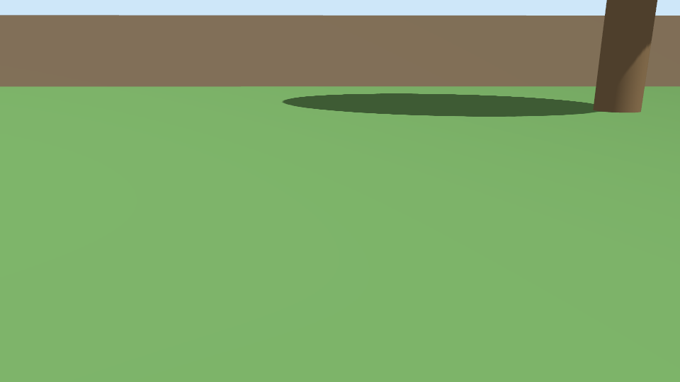

A robot that lies about where it is
Phase 2 put a mower in a yard. The first time it drove a square, it was sure it ended up back where it started. It was 1.2 m off. Then we fixed that and the endpoint looked perfect, but the robot had still driven the wrong square. Three bugs, one per layer: physics, mechanics, and our own analysis.
Meet the mower

Everything is built from primitives and lives in git:
mowbot_description: a xacro model. Two driven rear wheels, a frictionless front caster, a blade under the deck, a front camera. The<gazebo>tags add the simulator plugins:DiffDrive(turns/cmd_velinto wheel speeds and publishes wheel odometry),JointStatePublisher, a velocity-controlledJointControllerfor the blade, andOdometryPublisherfor ground truth.mowbot_gazebo: the yard world, aros_gz_bridgeconfig (Gazebo and ROS 2 are separate middlewares, so only topics listed in the bridge cross over), andsim.launch.py.- Two cameras rendered on the RTX 4080 with no window open: the mower's own (below), and a fixed "yard cam" for the shot above.
scripts/camera_snapshot.pysaves a frame as a PNG.

Ground truth is the superpower of simulation. A real mower never knows exactly where it is. Gazebo does. So every run publishes both /odom (what the robot thinks, integrated from wheel rotation, the way a real robot does it) and /ground_truth/odom (what actually happened). The gap between the two is the number Phase 3's localization has to shrink.
Telemetry first, again
Following the rule from Phase 1, the contract in docs/telemetry.md came before the code. Two new things in it:
- Sim time. Every node runs with
use_sim_time:=trueand takes its time from Gazebo's/clock. That makes the results immune to the lying WSL clock, which is still about 8% slow after a WSL update and restart. But sim time starts at 0, which Kibana would plot in January 1970. The shipper now anchors it:@timestamp = wall time at start + sim time, and it keeps the raw value insim.time_s. - Real-time factor. The shipper reports
rtf: sim seconds per wall second. It's been 1.00 on every run.
The experiment is make drive-run. A square_driver node drives a 3 m square with the blade on, steering only by odometry. The node records an MCAP bag, ships to Elasticsearch, and runs analysis/drive_report.py.
Bug 1: the wheels skid in turns
First run:
| Speed tracking (worst leg) | within 5% of 0.5 m/s | 18.5% off | FAIL |
| Odometry drift | <= 0.5 m per 10 m | 1.180 m | FAIL |
| Loop closure (true pose) | <= 0.3 m | 1.192 m | FAIL |
Odometry said the robot ended at (0.008, −0.008), a near-perfect square. Ground truth said (0.95, −0.72).
The speed failure was our bug: the cruise window included the driver's slow-down near each corner. After the fix: 0.500 m/s on every leg.
The drift was real, and the MCAP bag showed where it came from. A new debug aid, scripts/bag_probe.py, prints odometry against truth once per sim second:
t cmd w | odom yaw | true yaw
106.6 0.60 | 96.6 | 98.3
107.6 0.60 | 131.0 | 135.5
108.6 0.52 | 165.3 | 174.5
109.6 0.10 | 178.7 | -170.9 <- the wheels have stopped; the body keeps turning
110.6 0.00 | -179.8 | -169.3
Every 90° turn really rotated about 99°. The wheels lose grip and the body slides, so odometry, which only counts wheel rotation, never sees it. The usual Gazebo culprit is cylinder collision shapes on a plane: the contact solver gets unstable edge contacts. A sphere of the same radius touches the ground at exactly one point. We made the shape a knob (WHEELS=cylinder|sphere), the same way hysteresis was a knob in Experiment #1, and the sphere run went:
| Odometry drift | 0.011 m | PASS |
| Loop closure (true pose)| 0.012 m | PASS |
That's 100 times better. All green. Except…
Bug 2: the endpoint lied
We plotted the paths for the blog and saw it right away:

The middle panel is a perfect square, rotated 6.7°. A closed loop returns to its start whatever its rotation, so "end error 1.1 cm" was true, and meaningless. The worst error along the path was 48 cm.
Lesson: a checkpoint metric can hide a path error. drive_report now also checks the worst odometry-vs-truth gap anywhere along the path (≤ 0.10 m). Rerunning it on the "passing" run turned it into a FAIL, which is the right answer.
Bug 3: Newton's third law
Where did 6.7° come from? Zooming the bag in to 0.1 s steps:
t cmd v | odom yaw | true yaw true wz
1.0 0.00 | -0.0 | -0.0 0.000
1.1 0.50 | -0.0 | -5.5 -0.791
1.2 0.50 | -0.0 | -6.7 0.000
One tenth of a second, at the exact moment the driver started the first leg. That's also when it switched the blade on: 0 to 300 rad/s (about 2,900 rpm) in one physics step. Spinning a blade up counter-clockwise twists the body clockwise. Negative yaw, as measured.
A hypothesis is cheap; an experiment settles it:
| Run | Blade | Worst path error |
|---|---|---|
sq-sph-1 |
instant start | 0.484 m |
sq-sph-noblade-2 |
off | 0.010 m |
sq-sph-spinup-2 |
3 s soft start, then drive | 0.013 m |
The fix is what real mowers do: spin the blade up before moving, over a few seconds (blade_spinup_s, default 3). With cylinder wheels, the soft start still drifts 1.23 m, which shows the two bugs are independent.
What broke along the way
- Orphan simulators. Run #2 put odometry at 42 m after 15 seconds. Four headless Gazebo servers were still running from earlier runs: launch stops the
gzRuby wrapper, but the real server process can outlive it. With host networking, gz-transport finds every server, so their/clockand/odomstreams got mixed into one. Two fixes:GZ_PARTITION=<run_id>gives each run its own private gz-transport network, andmake sim-cleanruns before and after every sim target. (We tried killing the server from anOnShutdownhandler first. Launch refuses to start new processes once it's shutting down.) BLADE=0crashed the driver. That's the Phase 1 int-vs-double gotcha again: launch args are YAML, so0is an int.declare_float()moved into the sharedmowbot_telemetrypackage so every node can use it.- Determinism is a feature. The cylinder run reproduced to the millimetre: truth (0.952, −0.717) vs (0.951, −0.718). In simulation, A/B comparisons are exact.
Lessons
- Odometry is a belief, not a measurement of position. It can't see slip, and it's confidently wrong.
- Check the path, not just the destination. A loop that closes can still be the wrong loop.
- Physics engines model what you give them. Collision shapes and actuator torques have consequences that look like "the robot is bad at driving".
- Keep the raw recording. Every finding here came from replaying MCAP bags, not from the 2 Hz Elasticsearch samples.
Next: drive it by hand (make sim and make teleop), and a Kibana "Drive" dashboard. Then Phase 3: add realistic wheel noise and slip, and make the robot work out where it is.